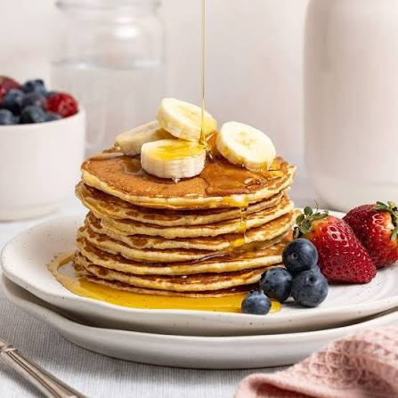

Classic Fluffy Pancakes
Whip up a batch of these light, fluffy, and golden-brown pancakes in under 20 minutes for the ultimate weekend breakfast.

Ingredients
Dry Ingredients
- 1 1/2 cups all-purpose flour
- 3 1/2 tsp baking powder
- 1 tsp salt
- 1 tbsp sugar
Wet Ingredients
- 1 1/4 cups milk
- 1 large egg
- 3 tbsp melted butter (plus extra for the pan)
- 1 tsp vanilla extract
Step-by-Step Instructions
- Whisk dry ingredients: In a large bowl, sift together the flour, baking powder, salt, and sugar.
- Combine wet ingredients: In a separate bowl, whisk together the milk, egg, melted butter, and vanilla extract.
- Mix batter: Pour the wet ingredients into the dry ingredients and stir gently with a spatula just until combined (do not overmix; lumps are fine!).
- Heat the griddle: Heat a lightly oiled griddle or frying pan over medium heat.
- Cook pancakes: Pour about 1/4 cup of batter for each pancake onto the griddle. Cook until bubbles form on the top and edges look set (about 2 to 3 minutes).
- Flip and brown: Flip carefully and cook the other side for another 1 to 2 minutes until golden brown.
- Serve: Serve warm with butter and your favorite maple syrup.
homepage